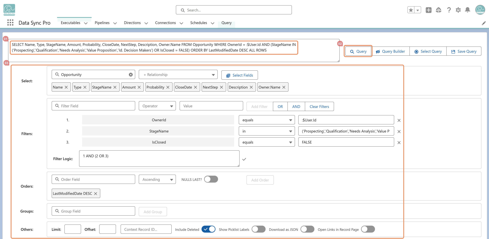

Query Manager first decomposes the SOQL into its SELECT, WHERE, ORDER BY, and GROUP BY clauses, making each part easy to adjust. It then displays the results in an interactive table with column filters, pagination, inline editing, bulk actions, exports, and record navigation — all available directly from the query output.
